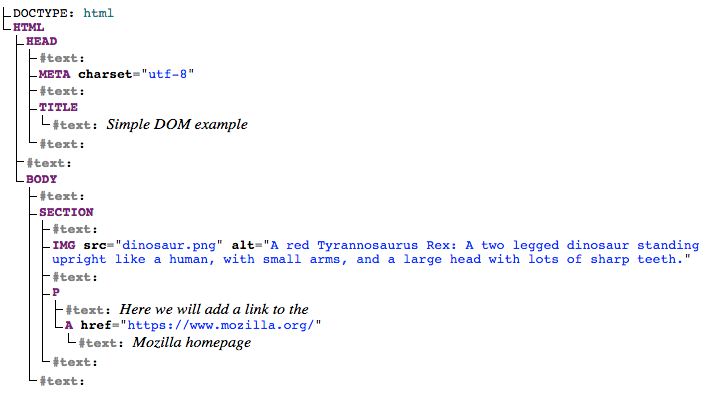
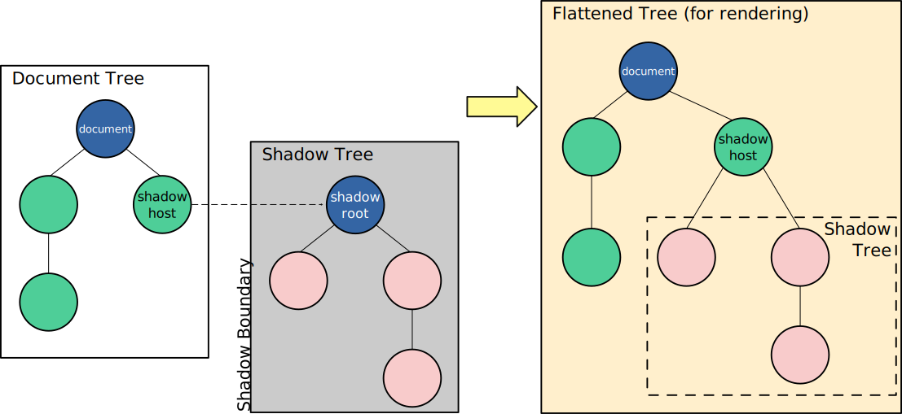

An important aspect of web components is encapsulation — being able to keep the markup structure, style, and behavior hidden and separate from other code on the page so that different parts do not clash, and the code can be kept nice and clean. The Shadow DOM API is a key part of this, providing a way to attach a hidden separated DOM to an element. This article covers the basics of using the Shadow DOM.
Note: Shadow DOM is supported by default in Firefox (63 and onwards), Chrome, Opera, and Safari. The new Chromium-based Edge (75 and onwards) supports it too; the old Edge didn't.
This article assumes you are already familiar with the concept of the DOM (Document Object Model) — a tree-like structure of connected nodes that represents the different elements and strings of text appearing in a markup document (usually an HTML document in the case of web documents). As an example, consider the following HTML fragment:
<!DOCTYPE html>
<html>
<head>
<meta charset="utf-8">
<title>Simple DOM example</title>
</head>
<body>
<section>
<img src="dinosaur.png" alt="A red Tyrannosaurus Rex: A two legged dinosaur standing upright like a human, with small arms, and a large head with lots of sharp teeth.">
<p>Here we will add a link to the <a href="https://www.mozilla.org/">Mozilla homepage</a></p>
</section>
</body>
</html>
This fragment produces the following DOM structure:

Shadow DOM allows hidden DOM trees to be attached to elements in the regular DOM tree — this shadow DOM tree starts with a shadow root, underneath which can be attached to any elements you want, in the same way as the normal DOM.

There are some bits of shadow DOM terminology to be aware of:
You can affect the nodes in the shadow DOM in exactly the same way as non-shadow nodes — for example appending children or setting attributes, styling individual nodes using element.style.foo, or adding style to the entire shadow DOM tree inside a {{htmlelement("style")}} element. The difference is that none of the code inside a shadow DOM can affect anything outside it, allowing for handy encapsulation.
Note that the shadow DOM is not a new thing by any means — browsers have used it for a long time to encapsulate the inner structure of an element. Think for example of a {{htmlelement("video")}} element, with the default browser controls exposed. All you see in the DOM is the <video> element, but it contains a series of buttons and other controls inside its shadow DOM. The shadow DOM spec has made it so that you are allowed to actually manipulate the shadow DOM of your own custom elements.
You can attach a shadow root to any element using the {{domxref("Element.attachShadow()")}} method. This takes as its parameter an options object that contains one option — mode — with a value of open or closed:
let shadow = elementRef.attachShadow({mode: 'open'});
let shadow = elementRef.attachShadow({mode: 'closed'});
open means that you can access the shadow DOM using JavaScript written in the main page context, for example using the {{domxref("Element.shadowRoot")}} property:
let myShadowDom = myCustomElem.shadowRoot;
If you attach a shadow root to a custom element with mode: closed set, you won't be able to access the shadow DOM from the outside — myCustomElem.shadowRoot returns null. This is the case with built in elements that contain shadow DOMs, such as <video>.
Note: As this blog post shows, it is actually fairly easy to work around closed shadow DOMs, and the hassle to completely hide them is often more than it's worth.
If you are attaching a shadow DOM to a custom element as part of its constructor (by far the most useful application of the shadow DOM), you would use something like this:
let shadow = this.attachShadow({mode: 'open'});
When you've attached a shadow DOM to an element, manipulating it is a matter of just using the same DOM APIs as you use for the regular DOM manipulation:
let para = document.createElement('p');
shadow.appendChild(para);
// etc.
Now let's walk through a simple example to demonstrate the shadow DOM in action inside a custom element — <popup-info> (see a live example also). This takes an image icon and a text string, and embeds the icon into the page. When the icon is focused, it displays the text in a pop up information box to provide further in-context information. To begin with, in our JavaScript file we define a class called PopUpInfo, which extends HTMLElement:
class PopUpInfo extends HTMLElement {
constructor() {
// Always call super first in constructor
super();
// write element functionality in here
...
}
}
Inside the class definition we define the element's constructor, which defines all the functionality the element will have when an instance of it is instantiated.
We first attach a shadow root to the custom element:
// Create a shadow root
let shadow = this.attachShadow({mode: 'open'});
Next, we use some DOM manipulation to create the element's internal shadow DOM structure:
// Create spans
let wrapper = document.createElement('span');
wrapper.setAttribute('class', 'wrapper');
let icon = document.createElement('span');
icon.setAttribute('class', 'icon');
icon.setAttribute('tabindex', 0);
let info = document.createElement('span');
info.setAttribute('class', 'info');
// Take attribute content and put it inside the info span
let text = this.getAttribute('data-text');
info.textContent = text;
// Insert icon
let imgUrl;
if(this.hasAttribute('img')) {
imgUrl = this.getAttribute('img');
} else {
imgUrl = 'img/default.png';
}
let img = document.createElement('img');
img.src = imgUrl;
icon.appendChild(img);
After that we create a {{htmlelement("style")}} element and populate it with some CSS to style it:
// Create some CSS to apply to the shadow dom
let style = document.createElement('style');
style.textContent = `
.wrapper {
position: relative;
}
.info {
font-size: 0.8rem;
width: 200px;
display: inline-block;
border: 1px solid black;
padding: 10px;
background: white;
border-radius: 10px;
opacity: 0;
transition: 0.6s all;
position: absolute;
bottom: 20px;
left: 10px;
z-index: 3;
}
img {
width: 1.2rem;
}
.icon:hover + .info, .icon:focus + .info {
opacity: 1;
}`;
The final step is to attach all the created elements to the shadow root:
// attach the created elements to the shadow dom shadow.appendChild(style); shadow.appendChild(wrapper); wrapper.appendChild(icon); wrapper.appendChild(info);
Once the class is defined, using the element is as simple as defining it, and putting it on the page, as explained in Using custom elements:
// Define the new element
customElements.define('popup-info', PopUpInfo);
<popup-info img="img/alt.png" data-text="Your card validation code (CVC) is an extra security feature — it is the last 3 or 4 numbers on the back of your card.">
In the above example we apply style to the Shadow DOM using a {{htmlelement("style")}} element, but it is perfectly possible to do it by referencing an external stylesheet from a {{htmlelement("link")}} element instead.
For example, take a look at this code from our popup-info-box-external-stylesheet example (see the source code):
// Apply external styles to the shadow dom
const linkElem = document.createElement('link');
linkElem.setAttribute('rel', 'stylesheet');
linkElem.setAttribute('href', 'style.css');
// Attach the created element to the shadow dom
shadow.appendChild(linkElem);
Note that {{htmlelement("link")}} elements do not block paint of the shadow root, so there may be a flash of unstyled content (FOUC) while the stylesheet loads.
Many modern browsers implement an optimization for {{htmlelement("style")}} tags either cloned from a common node or that have identical text, to allow them to share a single backing stylesheet. With this optimization the performance of external and internal styles should be similar.